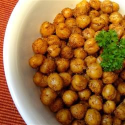

Chickpea Snack

Description
This is a great snack when you're craving chips but want something healthier. They're great on their own, but also yummy on top of a salad.
Ingredients
- 2 tablespoons olive oil
- 1 tablespoon ground cumin
- 1 teaspoon garlic powder
- ½ teaspoon chili powder
- 1 pinch sea salt
- 1 pinch ground black pepper
- 1 dash crushed red pepper
- 1 (15 ounce) can chickpeas, rinsed and drained
Steps
- Preheat an oven to 350 degrees F (175 degrees C).
- Whisk the oil, cumin, garlic powder, chili powder, sea salt, black pepper, and red pepper together in a small bowl; add the chickpeas and toss to coat. Spread into a single layer on a baking sheet.
- Roast in the preheated oven, stirring occasionally, until nicely browned and slightly crispy, about 45 minutes.
Nutrition Facts
Per Serving: 153 calories; protein 3.9g; carbohydrates 17.5g; fat 8g; sodium 295.7mg. Full Nutrition
Return to Main Page